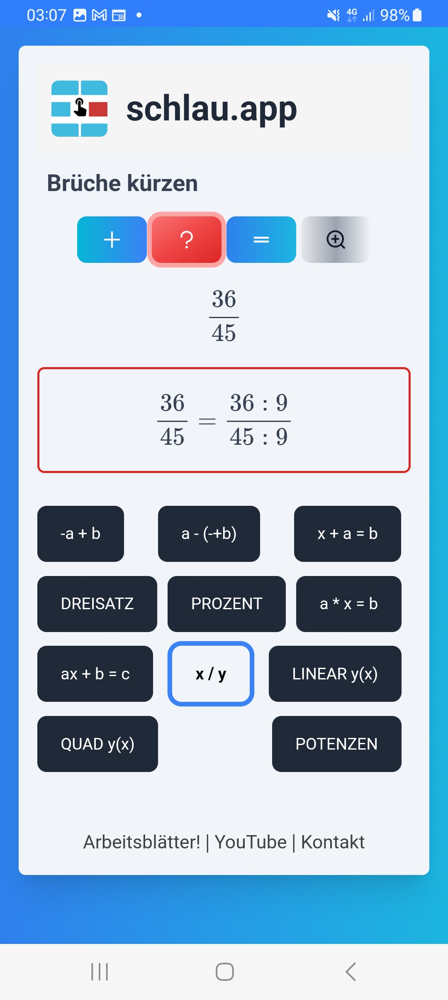

Das Kürzen (und Erweitern!) von Brüchen brauchst du in Mathe oft: zum Beispiel, wenn du bei einer Aufgabe herausbekommst: x = 6/4. Das musst du kürzen, sonst sieht es blöd aus und es kann auch Punkte kosten. Außerdem kommen Brüche in der Physik vor, da müssen z.B. Einheiten weggekürzt werden. Oder es kommen - in Mathe oder Physik - Potenzen über und unter einem Bruchstrich vor. Hier muss meistens gekürzt werden, damit die richtige Einheit herauskommt.
In den Erklärungen zum Brüche kürzen werden die Teiler genannt. Die Zahlenbeispiele sind einfach, so dass du alles nachvollziehen kannst. Das "Hintergrundwissen" über die Teiler hilft dir, noch smarter vorzugehen, auch wenn die Zahlen mal ungewohnt aussehen.
Wenn du bei den Beispielen immer wieder ein Produkt aus dem kleinen Einmaleins nicht kannst, dann musst du das kleine Einmaleins unbedingt nachlernen.
Rechne alle Beispiele mit schlau.app schriftlich, schreibe auch die Aufgabe nochmal hin: Bruch, Zwischenschritt, gekürzten Bruch, z.B.